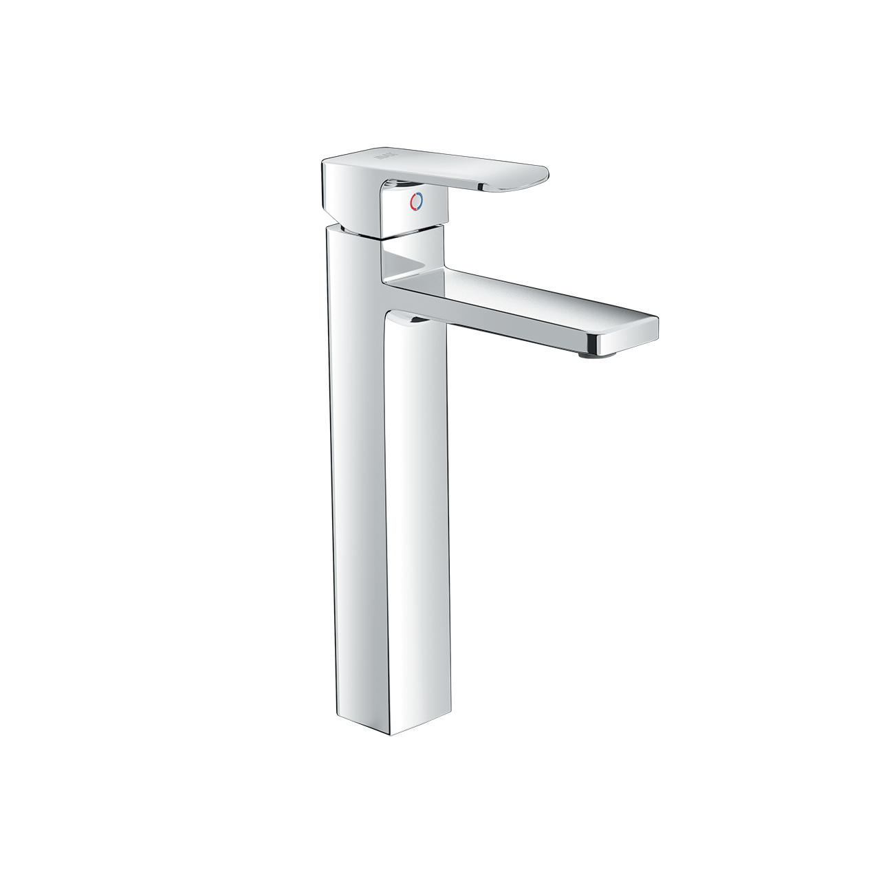
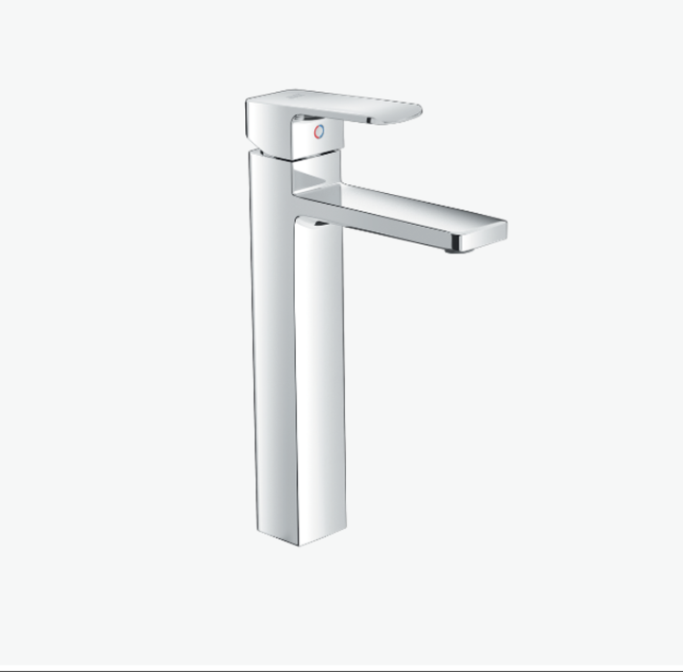
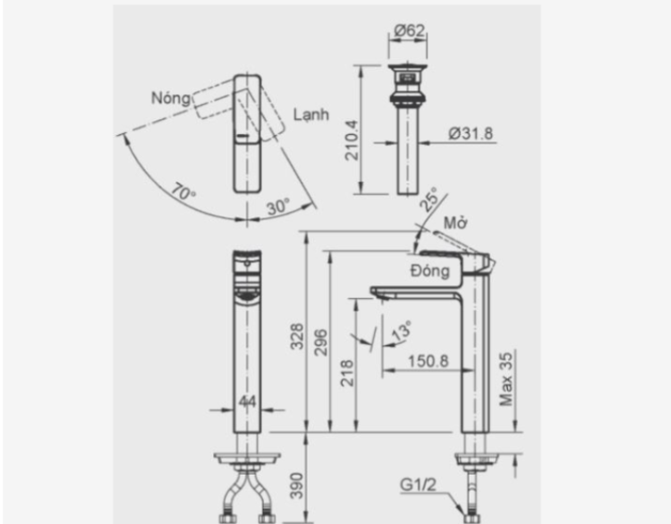

Trong nhịp sống hiện đại, việc lựa chọn thiết bị vệ sinh không chỉ dừng lại ở sự tiện lợi mà còn là cách khẳng định phong cách sống tinh tế. Sen vòi đơn LFV-5012SH của thương hiệu INAX chính là một trong những sản phẩm tiêu biểu mang đến trải nghiệm hoàn hảo, kết hợp giữa công nghệ tiên tiến, độ bền vượt trội và thiết kế sang trọng. Đây là lựa chọn lý tưởng cho những ai đang tìm kiếm một chiếc vòi chậu vừa bền đẹp vừa tối ưu công năng.Chất liệu cao cấp, chống han gỉ và oxy hóaSản phẩm được phủ lớp mạ Crom-Niken sáng bóng, mang đến vẻ đẹp hiện đại, sang trọng và bền bỉ trong suốt quá trình sử dụng.Chất liệu cao cấp giúp bề mặt chống han gỉ, chống oxy hóa và dễ dàng vệ sinh, luôn giữ được độ sáng như mới.Phần lõi van được làm từ sứ cao cấp, nổi bật với khả năng chống mài mòn, giảm thiểu rò rỉ nước, kéo dài tuổi thọ sản phẩm.Sử dụng vật liệu an toàn, không gây ảnh hưởng đến chất lượng nước, bảo vệ sức khỏe người dùng.Van sứ đóng mở êm ái, chống rò rỉ nướcVan điều khiển bằng sứ giúp thao tác nhẹ nhàng, đóng mở êm ái, đảm bảo độ chính xác khi điều chỉnh nhiệt độ và lưu lượng nước.Thiết kế vòi nóng lạnh tiện lợi, phù hợp với nhiều điều kiện thời tiết và nhu cầu sinh hoạt, mang lại sự thoải mái trong từng trải nghiệm.Dòng nước chảy êm, ổn định, hạn chế tình trạng bắn tung tóe, giúp giữ vệ sinh xung quanh chậu rửa.Độ bền vượt trội, tuổi thọ trung bình trên 10 năm, giúp người dùng tiết kiệm chi phí thay thế và sửa chữa.Thiết kế sen vòi đơn LFV-5012SH hiện đạiKiểu dáng cao, vuông vức, hiện đại, tạo nên điểm nhấn nổi bật cho không gian phòng tắm hoặc lavabo rửa tay.Phần thân vòi được thiết kế thon gọn nhưng chắc chắn, bề mặt sáng bóng mang lại cảm giác sang trọng và tinh tế.Tay gạt đặt phía trên, bản rộng, dễ dàng cầm nắm và điều chỉnh nhiệt độ chỉ bằng một thao tác đơn giản.Đầu vòi vát nhẹ, hài hòa với tổng thể thiết kế, giúp dòng nước chảy thẳng, gọn gàng và tiện lợi trong sử dụng.Video giới thiệu vòi chậu INAXBản vẽ sen vòi đơn LFV-5012SThông số kỹ thuậtTên sản phẩmSen vòi đơn LFV-5012SHDạngVòi chậu nóng lạnhChất liệuMạ Crom-NikenKích thước-Đặc điểm- Van điều khiển bằng sứ có độ bền cao, chống rò rỉ nướcThương hiệuINAXKhác- Hotline tư vấn và bảo hành: 18006633
Sen vòi đơn LFV-5012SH
Vòi chậu thương hiệu INAX.
Đã cập nhật danh sách yêu thích.
DANH MỤC: Vòi chậu
MÃ SẢN PHẨM: LFV-5012SH
DEPTH: mm
HEIGHT: mm
WIDTH: mm
Trong nhịp sống hiện đại, việc lựa chọn thiết bị vệ sinh không chỉ dừng lại ở sự tiện lợi mà còn là cách khẳng định phong cách sống tinh tế. Sen vòi đơn LFV-5012SH của thương hiệu INAX chính là một trong những sản phẩm tiêu biểu mang đến trải nghiệm hoàn hảo, kết hợp giữa công nghệ tiên tiến, độ bền vượt trội và thiết kế sang trọng. Đây là lựa chọn lý tưởng cho những ai đang tìm kiếm một chiếc vòi chậu vừa bền đẹp vừa tối ưu công năng.Chất liệu cao cấp, chống han gỉ và oxy hóaSản phẩm được phủ lớp mạ Crom-Niken sáng bóng, mang đến vẻ đẹp hiện đại, sang trọng và bền bỉ trong suốt quá trình sử dụng.Chất liệu cao cấp giúp bề mặt chống han gỉ, chống oxy hóa và dễ dàng vệ sinh, luôn giữ được độ sáng như mới.Phần lõi van được làm từ sứ cao cấp, nổi bật với khả năng chống mài mòn, giảm thiểu rò rỉ nước, kéo dài tuổi thọ sản phẩm.Sử dụng vật liệu an toàn, không gây ảnh hưởng đến chất lượng nước, bảo vệ sức khỏe người dùng.Van sứ đóng mở êm ái, chống rò rỉ nướcVan điều khiển bằng sứ giúp thao tác nhẹ nhàng, đóng mở êm ái, đảm bảo độ chính xác khi điều chỉnh nhiệt độ và lưu lượng nước.Thiết kế vòi nóng lạnh tiện lợi, phù hợp với nhiều điều kiện thời tiết và nhu cầu sinh hoạt, mang lại sự thoải mái trong từng trải nghiệm.Dòng nước chảy êm, ổn định, hạn chế tình trạng bắn tung tóe, giúp giữ vệ sinh xung quanh chậu rửa.Độ bền vượt trội, tuổi thọ trung bình trên 10 năm, giúp người dùng tiết kiệm chi phí thay thế và sửa chữa.Thiết kế sen vòi đơn LFV-5012SH hiện đạiKiểu dáng cao, vuông vức, hiện đại, tạo nên điểm nhấn nổi bật cho không gian phòng tắm hoặc lavabo rửa tay.Phần thân vòi được thiết kế thon gọn nhưng chắc chắn, bề mặt sáng bóng mang lại cảm giác sang trọng và tinh tế.Tay gạt đặt phía trên, bản rộng, dễ dàng cầm nắm và điều chỉnh nhiệt độ chỉ bằng một thao tác đơn giản.Đầu vòi vát nhẹ, hài hòa với tổng thể thiết kế, giúp dòng nước chảy thẳng, gọn gàng và tiện lợi trong sử dụng.Video giới thiệu vòi chậu INAXBản vẽ sen vòi đơn LFV-5012SThông số kỹ thuậtTên sản phẩmSen vòi đơn LFV-5012SHDạngVòi chậu nóng lạnhChất liệuMạ Crom-NikenKích thước-Đặc điểm- Van điều khiển bằng sứ có độ bền cao, chống rò rỉ nướcThương hiệuINAXKhác- Hotline tư vấn và bảo hành: 18006633
DANH MỤC: Vòi chậu
MÃ SẢN PHẨM: LFV-5012SH
DEPTH: mm
HEIGHT: mm
WIDTH: mm